Rediscover the music you already own.
Lumae is a free music player for your own music server. It knows how every song in your library sounds, so it can build mixes that flow, queues that never jolt, and a way back to albums you forgot you loved.
Beta on Android and iPhone. Needs your own Navidrome or Jellyfin 12 server and AudioMuse-AI 3.2 or newer with the Lumae Analysis plugin. What you need
Twenty songs, in the order you'd hear them.
Lumae places every song by how it sounds and walks between close neighbors, so the music moves without lurching. Height and color show energy, from calm (low, blue) to lively (high, bronze). Illustration.
Random shuffle can follow a whisper with a scream. The same twenty songs, with no thought for what came before. Illustration.
Where Lumae does this
- Everywhere
- Mixes, Vibes and the Shuffle button on albums, artists, playlists and collections.
- More than genre
- Neighbors are matched on sound, energy, tempo and key.
- Albums stay albums
- Press Play on an album and it plays in order, gapless.
Albums as art.
Album Shelf is a shelf you curate, shown large, one album at a time. Play one start to finish, rate it, give it a place on your shelf.
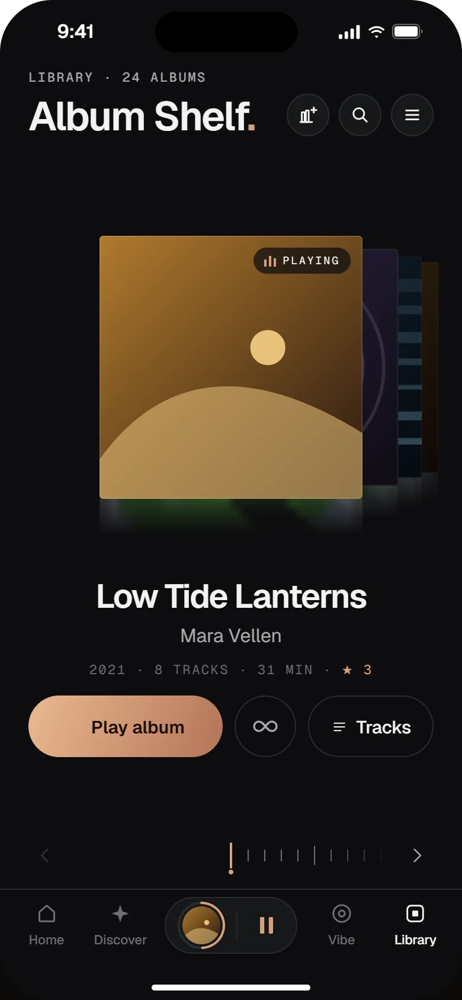
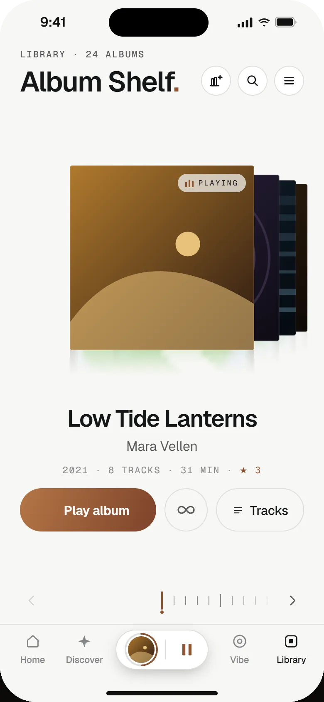
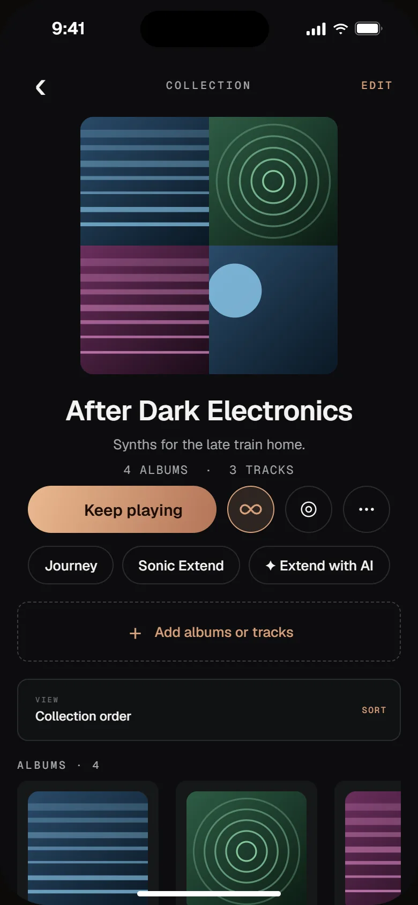
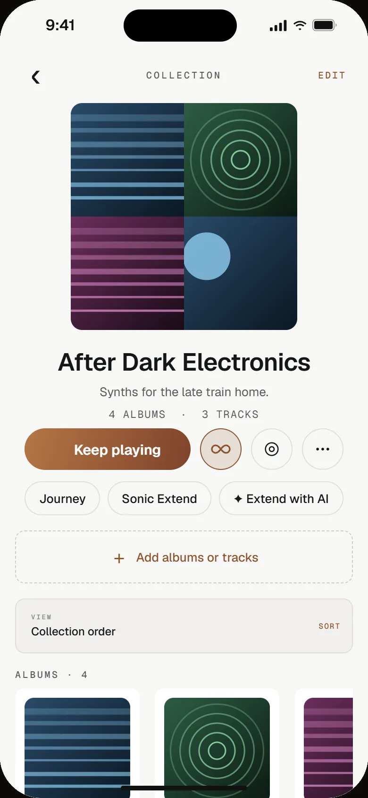
Screens show the next build, with made-up music.
- Collections
- Whole albums and single tracks in your own order, with your own cover.
- Journeys
- Put albums in an order and play them chapter by chapter.
- Smart playlists
- Rules like mood, tempo, energy or rating, saved as real playlists on your server.
- Artists and credits
- Discographies, artists who sound alike, and credits that connect albums through the people who made them.
What Lumae does
Start with a mix for right now.
Open Lumae and The Pulse is waiting: one mix for this time of day and what you've been into lately. Play it, or skip to another.
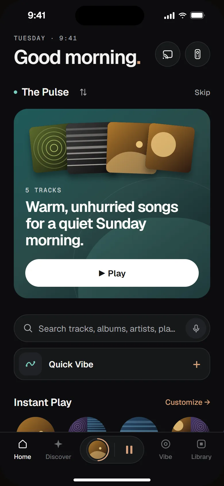
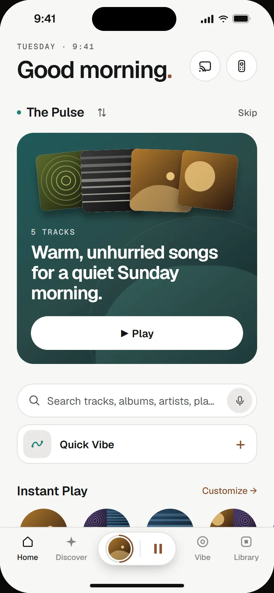
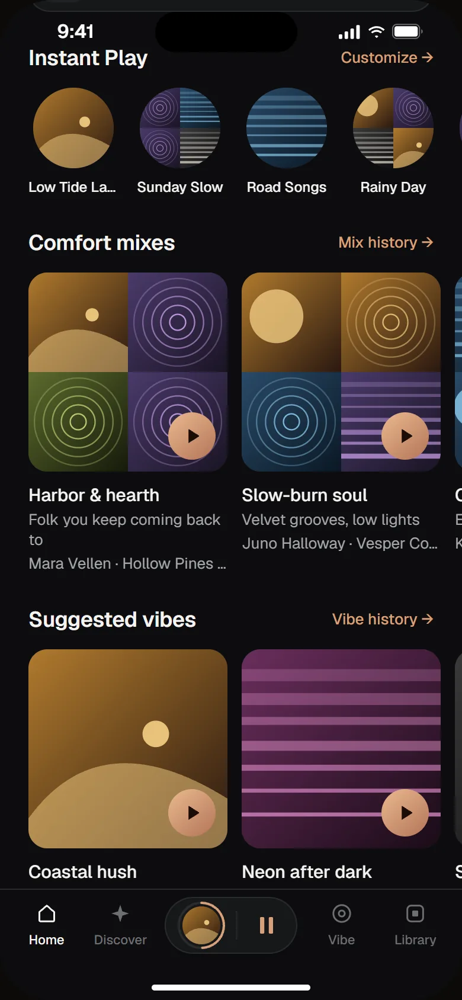
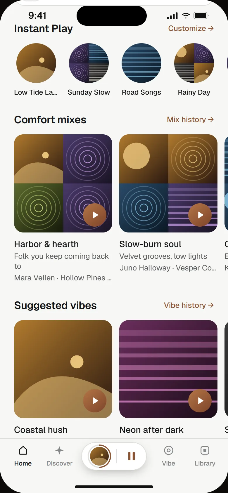
- Shift the vibe
- Toward Calm, Mellow, Active or High. The song playing keeps going.
- Comfort mixes
- From music you keep coming back to.
- Suggested vibes
- From your library's sound.
- Instant Play
- Up to twelve favorites one tap away, on Home and in the car. In the current beta it's called Quick Launch.
Steer it as it plays.
On Now Playing, open the queue to see the sonic path ahead and steer where it goes. Every change can be undone.
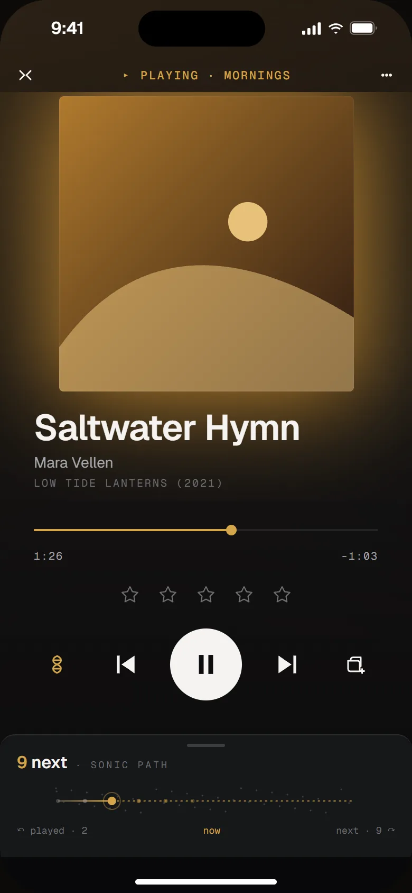
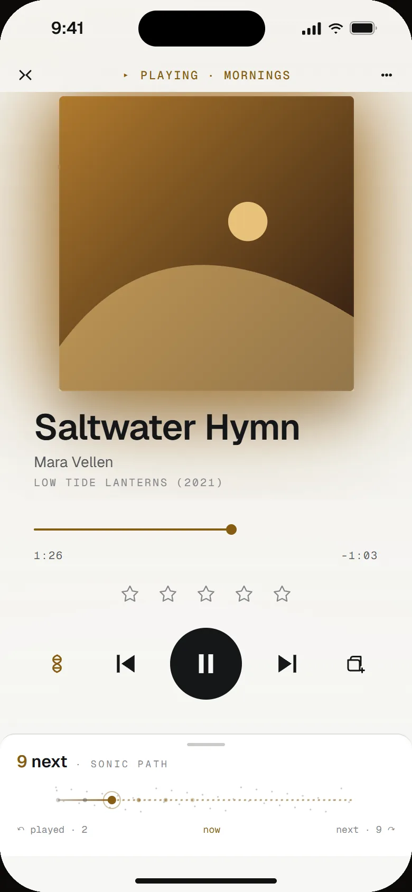
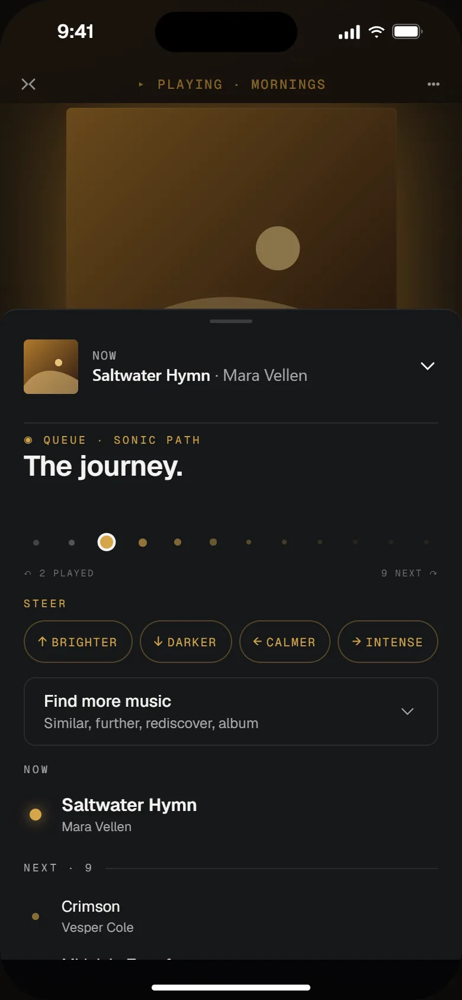
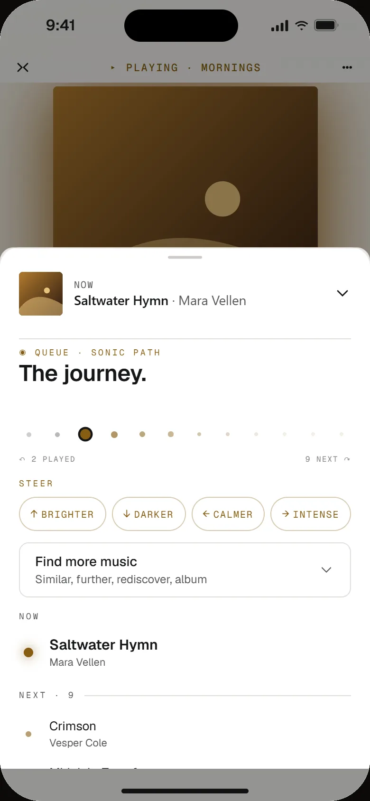
- Similar songs
- Keep a similar sound.
- Go further
- A similar sound you rarely play.
- Rediscover
- Your 4–5★ songs, unheard for a month.
- Related album
- A whole album from your library.
Find the next thing in what you already have.
Invitations, not a to-do list. Each tool walks your library a different way.
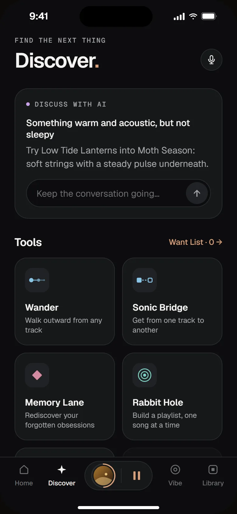
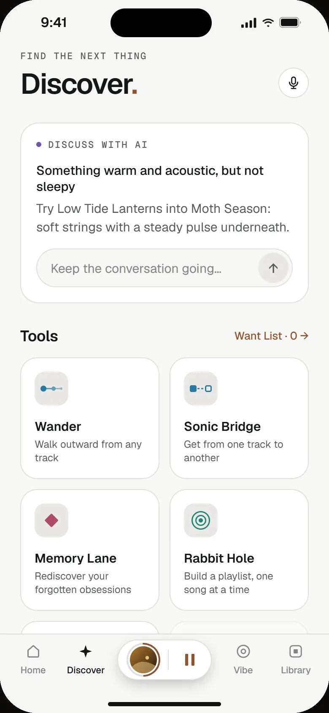
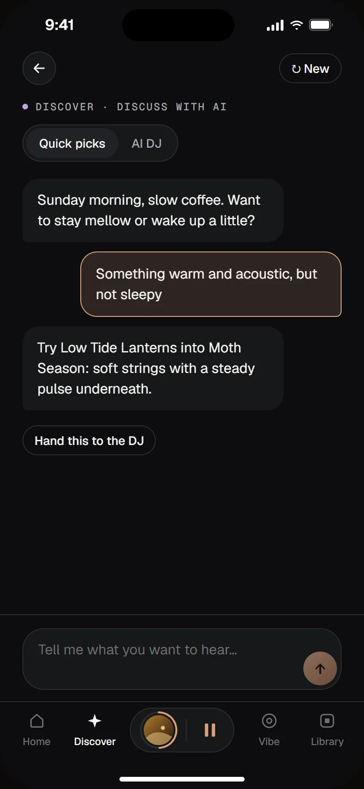
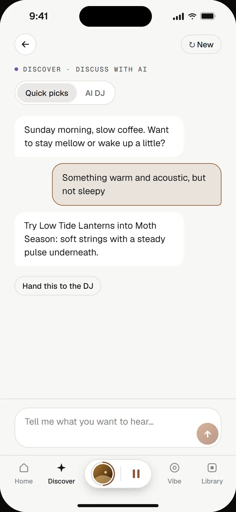
- Wander
- Walk outward from any song. It says how far each step goes, and can keep going from the last one.
- Sonic Bridge
- Pick two songs, say a jazz ballad and a techno track, and walk the path between them.
- Memory Lane
- Songs you loved, then stopped playing for three months or more.
- Discuss with AI
- Describe what you want and get songs from your library, each with a reason. Needs your own AI service.
- Search by Recording
- Hear something you think you own? Record about twenty seconds and your AudioMuse-AI server finds it in your library. Needs AudioMuse-AI 3.6.2 or newer with Neural Fingerprint on. The clip goes only to your server.
Build a mix around a feeling.
Describe it, shape it with sliders, or blend it from songs you love. Save it as a Vibe and it plays on from your own library.
- Mood Compass
- Type a few words, like “rock workout” or “deep focus”.
- DNA Vibe
- Ten sliders, from energy and mood to vocals and atmosphere.
- Palette Builder
- Mix up to ten tracks, albums and playlists, and set how much each one counts.
- Saved Vibes
- Push one while it plays: warmer or cooler, familiar or new. They follow you to your other phones.
Fall for a song? Find more of what you love about it.
On Now Playing, tap Sonic DNA to see the song's ten traits. Pick the ones that got you, say its atmosphere and tempo, and Lumae finds songs that share them.
- Approve or reject
- Each wave of matches, until it feels right.
- Play it now
- Or save it as a Palette for later.
- Every trait comes from the audio
- Through AudioMuse-AI's analysis, not from typed tags.
Crossfades that know how each song ends.
SmoothFade times each crossfade to where one song really ends and the next really begins.
- Gapless
- Songs that follow each other on an album play gapless.
- Loudness, leveled
- Loud songs are turned down to a steady level; quiet ones are never pushed up.
- Buffer ahead
- The next songs are kept whole on your phone, so the music rides out dead spots.
- Quality you choose
- Original files on Wi-Fi, a lighter stream on cellular, or originals everywhere.
In the car, on your speakers, off the grid.
Keep music on your phone, drive with it, and play it on the speakers at home.
- Offline
- Keep anything offline, let Smart downloads pick what you'll want, or mirror the whole library.
- In the car
- Android Auto and CarPlay, with Home, Vibes, Library and Downloads.
- Speakers
- Chromecast on both phones and AirPlay on iPhone. On Android, Sonos, Marantz (HEOS) and UPnP/DLNA speakers too.
- Home-screen widgets
- A Now playing widget on Android, and the Lumae Radio widget on Android and iPhone.
Undertone, for focus, study and sleep.
Music from your library or one set aside for it. It plays in sessions of its own, off the record, and never mixes into your listening.
- Presets in categories
- Pick an album, folder or track and it plays on repeat.
- Timer and alarm
- A timer of 15 to 90 minutes, or until a time. At the end it fades out or finishes the track, and an alarm can follow. On iPhone, alarms need iOS 26 or later.
- Set it up
- Turn it on in Settings → Undertone, then choose a library on your music server, or another Navidrome or Jellyfin server. Undertone in the guide
What you need
Lumae is for people who already run their own music server. No Lumae server sits in the middle: your music and its analysis stay on servers you run. Once AudioMuse-AI has analyzed your library and Lumae Analysis is installed, connecting takes a few minutes; the first import can take longer.
- Music server
- Navidrome, or Jellyfin 12.0 or newer. Other Subsonic servers, Plex, Emby and Lyrion aren't supported.
- Sound analysis
- AudioMuse-AI 3.2 or newer with the latest Lumae Analysis plugin from its catalog. Older plugin versions work with fewer features; Jellyfin needs 1.6.0 or newer.
- Phone
- Android 7.0 or newer, or an iPhone on iOS 16.4 or newer. Phones only, in portrait, in English for now. On iPhone, servers outside your home network need HTTPS.
- Optional
- Your own AI service, cloud or self-hosted; a Last.fm API key for album suggestions; Koito for your listening history.
Four steps to your first mix.
-
Install Lumae Analysis
In AudioMuse-AI, open Plugins and install Lumae Analysis from the catalog. Turn on its collection manager to sync Collections, shelves, Vibes and covers between phones.
-
Join the beta
Install it with TestFlight on iPhone, or from Google Play on Android after joining the beta group. The beta page shows how, and Demo Mode lets you look around without a server.
-
Connect
Lumae asks for your AudioMuse-AI and music server, and checks both before it changes anything.
-
Listen
Browse your library as it arrives. A short guide shows you around while the analysis syncs.
No account. No ads. No tracking.
Lumae has no server of its own. Your music, listening history and taste stay on your phone and on servers you run.
- Sign-ins stay locked
- Passwords, tokens and keys go in your phone's secure storage. For Jellyfin, Lumae keeps a token, never your password.
- AI only if you add it
- Off until you connect your own service. It never gets your audio or exact listening times.
- Stealth when you want it
- Keep a session out of your history, taste and scrobbles. Lumae Radio is always in Stealth.
Good to know
Does Lumae work without AudioMuse-AI?
No. Lumae is built on AudioMuse-AI's analysis of your music: without it, nothing tells one song's sound from another. AudioMuse-AI is a self-hosted project that runs next to your music server.
Which music servers work?
Navidrome, and Jellyfin 12.0 or newer with Lumae Analysis 1.6.0 or newer. Other Subsonic servers, Plex, Emby and Lyrion aren't supported. A phone stays with the server type it was set up with: moving between Navidrome and Jellyfin means a fresh install of Lumae.
Does my music or my listening leave my servers?
Music streams from your server to your phone, and your history and taste stay on your phone and your own servers. If you turn on AI or album suggestions, those services get only what their feature needs, never your audio. The privacy policy has every detail.
Does it work offline?
Yes. Keep what you like offline, let Smart downloads fill a budget with music you'll want, or mirror a whole library. Offline mode plays downloads only.
Is there an iPad, desktop or web version?
No, Lumae is made for phones. For the living room there is Lumae Radio, now in beta.
What isn't there yet?
No sleep timer, playback speed control or queue reordering yet, and no EQ on iPhone. CarPlay has no search or Siri. While you cast, SmoothFade, loudness leveling and the EQ pause.
Is Lumae an official AudioMuse-AI app?
No. Lumae is an independent project. Problems with the app belong in Lumae's GitHub issues; confirmed AudioMuse-AI server or plugin-system problems belong with the AudioMuse-AI project.
How do I report a problem or share an idea?
Open an issue on GitHub, or in the app go to Library ≡ → Settings → About & help → Report an issue or get in touch. Mention your phone, your music server, AudioMuse-AI and Lumae Analysis versions, your library's rough size, and what you were doing. Issues are public, so email logs to apps@rendyjansen.com instead.
And tell me what Lumae recommended that felt surprisingly right, and what felt repetitive, slow or confusing.
Hear your library again.
Lumae is in beta on Android and iPhone. Join, listen, and tell me what you find.